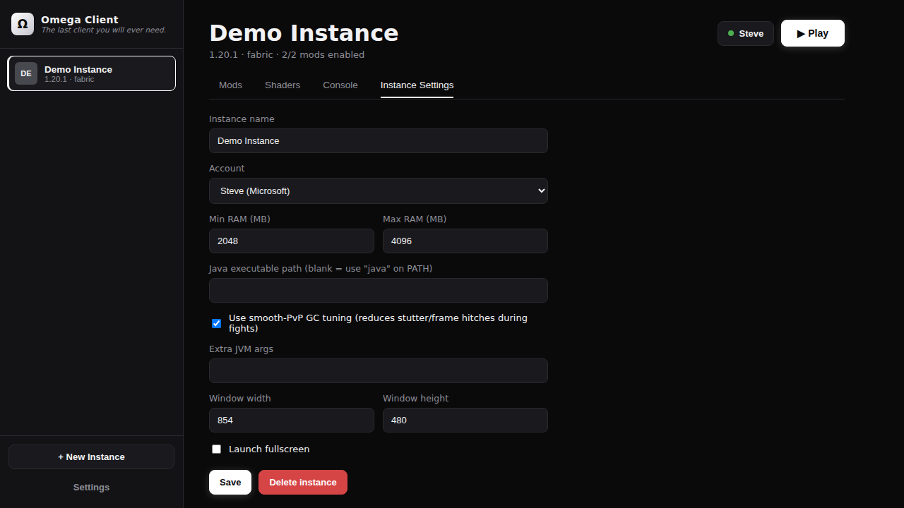

In your hands
See it working.


Two halves, one client: a launcher that manages instances, mods and launches — and a built-in companion mod whose features live entirely in-game.
Point at any existing Minecraft folder — Omega auto-detects installed versions and their loader (vanilla, Forge, Fabric, Quilt, NeoForge) by reading the version JSON.
Download any Minecraft release straight from Mojang, with one-click Fabric or Forge on top. Live progress, sha1-verified files, resumable downloads.
Import your .jars and flip them on/off per instance. Disabling renames to .disabled — non-destructive, and every loader already ignores it.
Reads fabric.mod.json, Forge's mods.toml and more straight out of the jar for real names and versions — and auto-tags mods by purpose.
Smooth PvP, Crystal PvP, UHC, Bedwars, Survival, or Visual/HUD only — one click bulk-switches your imported mods by tag.
Optional G1GC flag preset (Aikar's-flags-style) aimed at cutting the GC-pause frame hitches that matter most in close-quarters fights.
Resolves Forge/Fabric version JSON inheritance, merges libraries and arguments, extracts natives, builds the classpath, and spawns the JVM directly.
Click Configure on any mod to edit its actual JSON or TOML config from a schema-inferred form — no text editor required.
Every launch is preceded by a real install-completeness check. Missing files fail fast with one clear repair message, not a cryptic crash.
Iris + Sodium (Fabric) or Oculus (Forge) is preinstalled automatically. Import .zip shader packs in the Shaders tab and pick one in-game.
The standard OAuth → Xbox Live → Minecraft chain, working out of the box. Tokens are encrypted at rest and refreshed before every launch. Multi-account supported.
Installed builds check the rolling release on startup, download updates in the background, and apply them on restart. Configurable in Settings.

The companion mod ships inside the launcher and is preinstalled into every Fabric or Forge instance automatically. Open the menu with Right Shift, or the Ω button in the pause menu.
| Feature | What it actually does |
|---|---|
| Fullbright | Raises gamma past vanilla's slider cap — a pure brightness override, the same technique countless QoL mods use. |
| Block Highlight | Wireframe outlines around configured blocks (obsidian, respawn anchors, crying obsidian by default) within 20 blocks. Depth-tested like vanilla's own F3+B view — terrain still occludes it, so it's combat clarity, never X-ray. |
| Custom FOV / Zoom | Set your FOV freely, plus hold-to-zoom on a keybind (default C). Exact FOV and zoom values are set in-game under Visual Settings. |
| Toggle Sprint | Keeps you sprinting while holding forward. No double-tap, no speed changes — just vanilla sprinting without the finger gymnastics. |
| Info HUD | Coordinates, FPS, ping, facing direction, a CPS counter, and a keystroke display — each line individually toggleable. All information vanilla's F3 screen already shows, made friendly. |
| No Hurt Camera | Cancels the camera tilt when you take damage. Damage, knockback and the red flash are untouched — purely visual comfort. |
| No Fog | Pushes fog planes out to infinity — terrain, water, lava and nether fog alike. Doesn't extend render distance or reveal anything vanilla wouldn't render. |
| Clear Weather | Client-visual only: you never see or hear rain, while the server's real weather (crops, mobs, tridents, lightning) behaves exactly as it decides. |
| Weather & Time changer | Day/Noon/Night/Midnight and Clear/Rain/Thunder buttons that send the real vanilla /time and /weather commands — they only work where you already have permission. |
| Schematics | WorldEdit-style two-point selection, save-to-file, and ghost-preview overlay to build against — plus a best-effort Litematica .litematic importer. |
| Presence badge | An Ω rendered beside the nametag of players known to be on Omega Client (needs a server or proxy relaying the presence channel). Toggleable. |
| Particle control | A master switch, six category switches (block, ambient, totem, crit, explosion, portal), a free-form blacklist, and a density slider to thin out the rest. |
What's deliberately not included: reach or hitbox expansion, aimbot/kill-aura, auto-clicking, velocity or knockback modification, X-ray, and anything that reads server-side information the client wouldn't normally have. These cross from "visual setting" into "unfair advantage", and most servers treat them as cheating. One honest caveat: even visual settings like fullbright are disallowed on some servers — check the rules of wherever you play.
Identical on Fabric and Forge, all rebindable in vanilla's Controls screen under "Omega Client".
| Action | Default key |
|---|---|
| Open menu | Right Shift — or the Ω button in the pause menu |
| Zoom (hold) | C |
| Schematic: set Position 1 | O |
| Schematic: set Position 2 | P |
| Schematic: toggle preview | unbound (in the menu) |
| Schematic: re-anchor to me | unbound (in the menu) |
It works with the install you already have — nothing to migrate, nothing to lose.